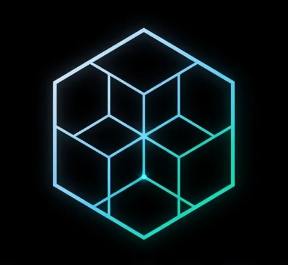

षट्कोण · shatkon · hexagon · the field manual · rules v0.4
A turn-based game of hidden fleets on a hex sea. Build ships from hexagonal segments, share one thrust pool across your whole fleet, hunt by sensor and signature, and sink the enemy flagship before they find yours.
⬡ hex board🛰️ fog of war🧩 modular ships🚀 missiles · drones · mines📖 story campaign
षट्कोण (shatkon) is Hindi for hexagon. The whole game grew out of the logo below: Ankur found his ship-segment rules inside it. The lines run in only three directions. Read them one way and you see flat rhombi. Read them another way and you see cubes, a hexagon inside a hexagon, and a star.
tap a cell for its role · traced from the original logo
How the logo maps onto a ship segment
Core: three hexagons meet at the centre node. Each one holds a bay (layers 4–6: core, engine, sensor, magazine…).
Periphery: three tips (a rhombus at the top and two "squares" at the lower corners). Each one holds a mount (layers 1–3: shield, armour, laser, launcher…).
Every segment in the ship builder, the ship cards and the combat panel is drawn this way: 3 bays + 3 mounts = 6 cells that tile the hexagon exactly.
Three ideas in one drawing
2D that reads as 3D
Every corner where three 120° angles meet reads as the corner of a cube. Shade one face light, one mid and one dark, and the flat drawing becomes isometric blocks. The "3D hexagon" is one of these, and it repeats on every third of the logo.
A hexagon inside the hexagon
The inner points sit at exactly 0.4 × the outer radius and form a second hexagon with the same orientation. Around it, three smaller "3D hexagons" turn like a rotor: the same shape, every 120°.
A fractal at heart
The only lines inside the inner hexagon are its three diameters. Swap them for a copy of the logo at 0.4 scale and the pattern repeats forever. Each zoom of 2.5× lands on the same picture.
The flaw fixed in logo.svg
In the original artwork, the two lines leaving the bottom inner node run on past the star points to the outer edge. That cuts two little triangles (0.2 × the radius on a side) out of the lower tips. The two are mirror images. The top tip is clean, so the drawing loses its 120° symmetry.
The fix: stop those two lines at the star points. That gives 21 lines and 12 cells, symmetric under every 120° turn.
The original logo

Everything in this guide is traced from or corrected from this logo. brand/logo_original_trace.svg is the faithful trace, flaw included. brand/logo.svg is the corrected mark used throughout. brand/logo-core-periphery.svg shows the core & periphery reading.
The motif kit
The same mark recurs across this guide, varied by section: the star as a bullet and favicon, cube shading, the core, the tips, the 3D hexagon, the recursion, and the Weave's pink for the enemy.
Flower designer
k = 0.4 is the logo. Every line belongs to one of three families (vertical, ±30°).
1Quick start
The game in ninety seconds
Two fleets start in opposite home zones: Player 1 in the south, Player 2 in the north. Neither can see the other. Each turn you spend command points on orders; after both players have acted, everything in flight moves at once. Sink the enemy flagship to win.
Command points
3 points every turn. Points you don't spend go to the bank, which holds up to 6. Every order costs 1, and end is free.
rules/world_v0.4.yaml › turns, actions
One round
Player turnPlayer turnFlight phase · 6 ticks
The first player alternates from round to round. In the flight phase, missiles and drones move in ticks, so a fast missile and a slow drone take turns fairly. Fuel burns down, shields come back and point defence reloads. Games end at turn 30.
rules/world_v0.4.yaml › turns · engine/flight.js
Your orders
How you win: destroy the enemy flagship; losing other ships doesn't end the game. A fleet with no flagship loses when all its ships are dead, and if both sides lose at once it's a draw. A ship dies when its core is destroyed, or when nothing but its engines (and core) still works. engine/damage.js › checkWin · world › damage.ship_dead_when
2Game modes
Ways to play
Every mode runs the same engine. Change mode with the selector at the top right of the play screen.
3The board
A hexagon of hexagons
The board is a big hexagon of radius R, made of pointy-top hexes with axial coordinates[q, r]. r grows towards the south, where Player 1 lives. The distance between two hexes is (|dq| + |dr| + |dq+dr|) / 2. Hover or tap a hex below to see its coordinates and its distance from the centre.
hover a hex
Directions
Six neighbours: E [1,0]NE [1,-1]NW [0,-1]W [-1,0]SW [-1,1]SE [0,1].
engine/hex.js › DIRS
Terrain
Type
Effect
Asteroid
Blocks movement and sight: beams and lines of fire stop on rock.
Nebula
Sensor range −3 inside, signature −2 inside: you see less and you're harder to see.
In a map file a terrain piece is at plus a shape: radius: n makes a disc, size: 3 three hexes in a row (W, centre, E), size: 7 a disc of radius 1, and anything else a single hex.
world › terrain · engine/rules.js › terrainCells
Home zones
Each player deploys inside a zone measured from an edge: { edge: south, depth: 3 } means the three rows nearest the south edge. Campaign maps may also list zones as explicit hexes.
engine/hex.js › EDGE · maps/*.yaml › zones
4Ships
Built from segments
A ship is 1 to 7 joined hexes called segments. Each segment has 3 bays (inside: the core, engines, sensors…) and 3 mounts (outside: shields, armour, guns). A segment costs 3 points on top of its parts. Every segment after the first needs a coupling in one of its bays.
Core vs periphery
When a segment takes a hit, the damage goes to the working part with the lowest layer number first. So the periphery protects the core: shields take hits before armour, armour before guns, guns before the bays, and the core last of all.
world › bay_parts / mount_parts › layer · damage.each_hit
Anatomy of one segment
Bays sit inside the hull and mounts sit outside. A part placed in the wrong kind of slot is rejected when the fleet is loaded.
The parts catalogue
rules/world_v0.4.yaml › bay_parts, mount_parts
🔭 Seeing
Sensor range = 2 from the core + 2 per working sensor. Signature = number of segments − 1 per working stealth part, never below ⌈segments ÷ 3⌉. A big ship is easy to spot.
🚀 Moving
Each working engine adds 1 thrust to a pool shared by the whole fleet. Moving a ship 1 hex costs 1 thrust per segment of that ship, so big hulls are slow.
⚔️ Fighting
Lasers fire instantly in a straight line. Launchers fire missiles and drones stored in magazines (3 per magazine). Point defence shoots down incoming munitions. Shields and armour soak hits.
🛠️ Ship explorer and builder
Pick a real ship from the fleets file or the campaign, then click a segment to inspect it. Add and remove parts to see how cost, sensor range, signature and thrust change. The validator checks the same rules as engine/rules.js: slot limits, one core, enough couplings and magazine room.
A skirmish fleet costs at most 200 points, counting segments, parts and loaded munitions. Each fleet needs exactly one flagship.
Speed vs bulk
The pool is shared. A 7-segment flagship eats 7 thrust per hex, so a small engine-heavy ship can carry the pool for the fleet while the big one crawls.
Thrust limits
Each turn the fleet must average at least needs_average_of (0) hexes, and no ship may go more than max_above_average (1) above the average. Thrust can be banked for bank_turns (2) turns.
Examples from the rules file:
5Sample ships and fleets
Ships of the Channels
Every stat below is calculated from the hull lists in the YAML: segments, sensor (2 + 2 per sensor), signature (segments − stealth, floor ⌈n/3⌉), thrust (engines) and cost (3 per segment + parts + munitions). Tap a card to open it in the builder.
Skirmish fleet rules/fleets_v0.4.yaml
Campaign hulls beta/campaign/ships.yaml
6Combat
Find them. Hit them first.
A fight runs on information. You can only shoot what your fleet's network can see, and every shot makes you easier to see. Press play to watch one exchange from contact to a lost segment, or step through it.
🛰️ Detection
You see a target when distance ≤ your sensor range + its signature + its flare.
Flare is a flash from what a ship just did: .
+1 signature after a big move (2 hexes or more). −2 inside a nebula, where sensors also drop by 3.
Fuzzy contacts: just outside that range (+3) you get a blurred circle of radius 2, not an exact hex.
Small objects (missiles, drones) have signature 1. Mines have −6, so they're nearly invisible.
A drone detonation lights up everything within 4.
world › detection · engine/detect.js
📡 Scans and comms
Scan (1 CP, once per ship per turn, only after it has moved): everything in the clear ring is fully revealed until the end of next round, and the faint ring gives fuzzy contacts. The rings grow the further forward the ship is:
Tier
From
Clear / faint
near home
row 0
2 / 4
mid-field
home depth + 2 rows
4 / 7
centre line and beyond
R rows
6 / 10
Scanning flares the ship by 2. Comms: two ships are linked when they're within the longer of their two link ranges (core 4, comms part 12). Links chain into a network, and any ship can fire at or lock onto whatever its network sees.
engine/scan.js › scanSteps · world › comms
🚀 Movement and thrust
One pool for the whole fleet: 1 thrust per working engine, plus whatever is banked. Moving costs 1 thrust per segment per hex. Asteroids block, and a move refuses paths through things you know about. If you bump into something you couldn't see, both are revealed and the move stops there.
engine/actions.js › thrust, move
🔴 Lasers
2 hits out to range 8, losing 1 hit every 4 hexes (2 hits at 1–4, 1 hit at 5–8). The beam is instant and straight. It needs a clear line (asteroids block it) and stops at the first thing it meets, even something the shooter couldn't see. Each weapon fires once a turn. Anyone who can see the shooter sees the beam, and a hit flares the shooter by 3.
world › mount_parts.laser · engine/actions.js › fire
💥 Missiles, drones, mines
A missile can launch locked onto a target your network sees. Its seeker keeps the lock while it (seeker range + target signature) or the launcher's network still sees the target. Otherwise it flies its route and grabs the nearest enemy its seeker can find. A route can't be longer than speed × fuel. Drones patrol at random, report what they see, and can be detonated remotely (1 CP). Mines are placed at setup only, up to 6 per player. Fuel burns down at the end of each round.
world › munitions · engine/flight.js · actions.js › launch, detonate
🛡️ Damage, shields, wrecks
Look at the working parts in the segment that was hit.
Take the ones with the lowest layer number.
One of them, picked at random, loses 1 hp.
A hit that finds nothing left wrecks the segment.
A wrecked segment stays attached, still weighs the ship down, and lets shots pass through. Shields (hp 1) soak the first hit on their segment each round, then come back. Armour (hp 2) doesn't come back. Point defence stops 1 enemy missile or drone per round and flares the defender by 2. Friendly fire is on, but your own munitions pass through your own ships. Beams don't pass through your own munitions.
world › damage · engine/damage.js
⚡ Combat v2: beta and campaign beta/rules · campaign-engine 960a0f7
The beta build runs faster fights. These changes are live in /beta/ and the story campaign, not yet in main's rules/.
7Maps
Every board, drawn from its YAML
Terrain is expanded the same way the engine does it. Blue is Player 1 / humans (south) and pink is Player 2 / the Weave (north). Ships are drawn at their deployment hexes; ◆ marks a mine and ◎ the beacon.
The Channels are frontier lanes threaded between asteroid belts and nebula banks. Two maps describe them: the repo's story campaign (in beta, so this is the version that plays), and a design draft of a skirmish-tutorial overlay that isn't loaded by the engine yet.
Story campaign: Shatkon: The Weavein beta
beta/campaign/campaign.yaml › nodes
The Shatkon Channels design draft
8 sectors, a five-step tutorial spine, then a branch. The five tutorial channels are proposed: their map and fleet files haven't been written. The three ready nodes reuse existing maps.
campaign_world_map.yaml (local draft, not in rules/index.yaml)
How a chapter runs
9The story
Shatkon: The Weave
The survey cutter Kestrel is flying home to Meridian Station when something on no registry starts counting at it. The Weave builds ships out of cells, and it learns from every fight.
teaser
THE WEAVE
Chapter timeline
Story beats are blurred until you turn spoilers on. Each chapter's art fades in as you scroll.
The cast
10Design guides
Make your own: maps, ships, chapters, scenes
Everything in Shatkon is data. These are the formats the engine and the story player read, with checklists the existing content already follows.